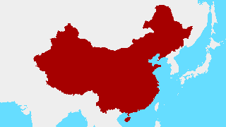
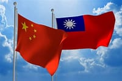

China X Taiwan
Contexto histórico:
Imperialismo na ásia:
O Imperialismo na ásia se deu ao longo do século XIX quando potências europeias, o Japão e os Estados Unidos ocuparam regiões asiáticas.A ocupação das índias, nome das terras então descobertas, começou a ocorrer durante a Revolução Comercial ocorrida entre os séculos XV e XVII.
Os portugueses foram um dos primeiros autorizados a constituir portos em certas regiões da índia, China e Japão.
Contudo, com a Revolução que ocorria, o cenário econômico europeu mudou. Com o surgimento das fábricas, aumentou-se a produção e por consequência demandava-se maior quantidade de matérias-primas. Ao mesmo tempo, era preciso menos mão de obra e o desemprego aumentou de maneira significativa.
Desse modo, nações industrializadas e desenvolvidas como França e Inglaterra serão as novas protagonistas da conquista imperialista aos países asiáticos.
Nesse período as imposições inglesas à China foram severas e devastadoras. O governo chinês dificultou as transações comerciais de chá pleiteadas pela Grã-Bretanha, que encontrou no ópio a solução para a obter mais lucro.
A substância, por seus efeitos devastadores, era proibida na Grã-Bretanha, mas foi vendida à população chinesa.
Rapidamente, as pessoas tornaram-se dependentes e o governo chinês fez um apelo aos britânicos que não o comercializassem mais. Entretanto, não obtiveram resultados com tal apelo.
Como forma de reação, os chineses queimaram em 1839 uma faixa de 20 mil caixas de ópio, no porto de Cantão. Em seguida, resolveram fechá-lo, os britânicos tomaram esta atitude como uma agressão e declararam guerra ao país.

http://estudopravaler.blogspot.com/2014/05/imperialismo-e-industrializacao.html
Guerra do ópio
O ocorrido ficou conhecido como Guerra do ópio e teve efeitos desastrosos para os chineses, que em virtude disso foram obrigados a assinar, em 1842, o Tratado de Nanquim.
O tratado tinha como objetivo determinar a abertura de cinco portos chineses para os ingleses e a transferência de Hong Kong para a Grã-Bretanha. O Tratado de Nanquim foi o primeiro de uma série de tratados que realizavam imposições desiguais onde o Reino Unido tinha um número muito maior de vantagens comerciais em comparação com a China. A França e os EUA aproveitaram a fragilidade da China para assinarem tratados comerciais com este país.
Revolta de Taiping
O golpe maior, ocorreu em 1851, na Revolta de Taiping (1851-1864), motivada por questões de âmbito religiosas, movido pela revolta dos camponeses com o governo imperial e com a invasão estrangeira que ocorria.
Os americanos e britânicos apoiaram incondicionalmente de maneira militar o Imperador a fim de garantir futuras vantagens. A dinastia no poder nunca mais recuperou o prestígio após o conflito civil e ainda teve que ceder mais benefícios comerciais às potências europeias que continuavam em situação de prejuízo para eles. Em 1864, derrotados, os chineses viram seu território ser retalhado entre Alemanha, Estados Unidos, França, Grã-Bretanha, Japão e Rússia. Nova derrota ocorreu após a Guerra dos Boxers, um movimento de carater nacionalista chinês.
Dessa vez, a China foi obrigada a aceitar a política de portas abertas, onde era obrigada a abrir todos os portos à comercialização de produtos estrangeiros mesmo que contra a sua vontade.
China como república

https://www.wallpaperup.com/1166198/bandera_republica_popular_china_asia.html
Com o rompimento do sistema que vigorava até então, no final do século XIX, a economia do país ficou abalada, e a Dinastia Manchu diante da situação que se encontrava se viu obrigada a criar um sistema de impostos que fosse eficaz. Devido a esse fator, a nobreza perdeu seus privilégios, tendo que direcionar boa parte dos recursos que extrai dos súditos para o pagamento dos impostos.
A outra medida a ser tomada pela dinastia Manchu seria o incentivo ao comércio e à indústria com o objetivo de gerar recursos financeiros através do pagamento dos tributos. Surgiu então uma nova classe social, a burguesia industrial, que iria pesar do outro lado da balança e fazer com que os recursos financeiros do país não ficassem mais tão concentrados como era na nobreza.
Para que tais medidas fossem executadas não foi um processo fácil, uma vez que não era do interesse da nobreza, e que era esta quem sustentava o sistema imperial. Outra dificuldade a ser superada era o controle do comércio, pois os portos e alfândegas, bem como as cidades mais desenvolvidas no comércio e na indústria, estavam sob o controle estrangeiro o que impossibilitava muitas coisas. As tentativas de fazer uma reforma financeira pareciam mais distantes.
Diante desse contexto, o poder dos imperadores perdeu a força, a cobrança dos impostos e tributos saiu do controle dos imperadores, a nobreza se separou do poder imperial e aumentou a exploração das massas camponesas, instaurando mais desigualdades, os camponeses, por sua vez, organizaram várias revoltas e as forças políticas se repartiram gradualmente. Após a instalação do caos social no país, a República foi proclamada a república, representando a queda do poder imperial.

https://www.atlasbig.com/pt-pt/republica-popular-da-china
Por 20 anos, as classes dominantes não conseguiram se aliar e retomar a unidade como nação, ficando a sociedade então fragmentada, situação esta que perdurou até a Revolução Comunista, em 1949.
O movimento republicano conduzido pelo Partido Nacionalista da China tentou a todo custo unificar a China, e formar um governo nacional. Contudo combateram os comunistas e os proprietários rurais que haviam formado exércitos regionais para manter o controle político e econômico nos seus respectivos domínios territoriais.
Chiang Kai-shek conseguiu dominar a maior parte do território chines e estabelecer um poder central. Contudo, para que este poder central se estabilizasse, era necessário o apoio das classes sociais, mas estas estavam ocupadas conflitando entre si para defender seus interesses, em sua maioria divergentes entre si.
Chiang Kai-shek liderou uma série de golpes militares, iniciando uma ditadura. Passou então a reprimir violentamente os trabalhadores urbanos e as revoltas comunistas. Em 1934, conseguiu realizar um golpe sobre o movimento comunista, forçando-o a abandonar as suas posições no sul do país.
O partido comunista vinha tentando implantar o marxismo, com apoio do proletariado urbano, mas seu líder, Mao Tsé-Tung, abandonou a estratégia e iniciou a formação de um Exército de Libertação Popular, formado por camponeses.
Os combates entre comunistas e governo continuaram até 1937, quando o governo teve que se preocupar com um novo inimigo: os invasores japoneses. Com o Japão tendo ocupado parte do território chinês, comunistas e nacionalistas firmaram uma aliança, com o objetivo de lutar contra o inimigo em comum. Esta luta, contra a ocupação japonesa, acabou por fortalecer as forças comunistas, pois eliminou a elite rural e criou uma suposta solidariedade entre as massas rurais que vinham sendo prejudicadas pela manipulação que sofriam.
Os comunistas persistiram influenciando as massas com a finalidade de organizá-los com promessas de reforma agrária e com a proposta de uma nova organização política.
Após a queda do Japão, na Segunda Guerra Mundial, terminaram as invasões japonesas na China. A partir daquela ocasião, comunistas e nacionalistas retomaram a guerra civil, que foi travada de 1946 a 1949. Enquanto os comunistas detinham controle das áreas rurais, os nacionalistas sobre as cidades. Mao Tse Tung armou então uma estratégia, que consistia em cercar as cidades, a partir dos campos. Gradualmente os comunistas foram adquirindo o controle total da região norte do país, que possuía os maiores recursos econômicos. Foi uma questão de tempo para os comunistas dominarem o restante do território chinês.
Em 1949, os comunistas expulsaram os nacionalistas para a ilha de Taiwan e proclamaram a República Popular da China
No período entre 1946 e 1949, o ímpeto revolucionário no interior chinês aumentou, o que fortaleceu os comunistas. Durante esse período, os comunistas ampliaram as mudanças revolucionárias, o que permitiu que cerca de 100 milhões de chineses tivessem acesso à terra. Isso levou ao isolamento dos nacionalistas nas grandes cidades chinesas.
A guerra civil chinesa chegou ao fim quando as forças comunistas conseguiram entrar em Pequim em janeiro de 1949. Isso forçou Chiang Kai-shek, os nacionalistas e a alta burguesia chinesa a abandonar o país para a ilha de Formosa, que originou Taiwan, um país de reconhecimento internacional limitado até hoje.
A transformação da China em uma nação comunista ocorreu a partir de 1º de outubro de 1949, quando foi proclamada a República Popular da China. A partir desse momento, iniciou-se o processo de transformações para a implantação do comunismo nesse país sob a liderança de Mao Tsé-tung
O conflito:
Taiwan é uma ilha com cerca de 24 milhões de habitantes, a menos de 200 quilômetros da China continental. A ilha tem na prática um governo autônomo desde 1949, ano em que o Partido Comunista Chinês de Mao Tse-Tung venceu uma guerra civil que perdurava desde 1927 e chegou ao poder na China.
O então líder da China derrubado pela revolução, Chiang Kai-Shek, fugiu com aliados políticos e se refugiou em Taiwan, também chamada de "Formosa".
Os opositores do Partido Comunista fundaram em Taiwan um governo paralelo, e o caso virou uma disputa entre as partes desde então.
Em todo esse processo Taiwan e a China continental mantiveram muitas similaridades, como a língua (mandarim também é o idioma oficial na ilha) e a proximidade cultural. Nas últimas décadas, a economia de Taiwan teve destaque sobretudo pela atuação na fabricação de produtos de alta tecnologia, como chips - o país é lar, por exemplo, da Foxconn, que produz os iPhones da Apple. Taiwan tem uma das dez maiores economias da ásia e está entre as 25 maiores do mundo, sendo considerada uma economia avançada pelo Fundo Monetário Internacional.
Apesar das disputas, Taiwan e China também seguem tendo laços comerciais: a China continental foi o principal destino das exportações de Taiwan em 2012, com mais de US $120 bilhões vendido

Afinal de contas, Taiwan é um país?
Taiwan tem, a partir do momento da separação pós-guerra civil, uma situação política controversa. A ilha não é um país reconhecido nos organismos internacionais, mas também não está sob o governo de Pequim na China continental sendo de certa maneira independente.
Taiwan se autodenomina "República da China", enquanto a China continental é a "República Popular da China".
Os dois governos disputaram internacionalmente por algum tempo para decidir quem herda a herança do legítimo governo chinês. A briga acabou em partes nos anos 1970, com as Nações Unidas (ONU) e outros organismos internacionais passando a reconhecer a China continental.
Nas Olimpíadas, por exemplo, a China continental e Taiwan hoje competem separadamente (assim como Hong Kong, outro território chinês de status controverso.
Apesar da polarização crescente com a China, os EUA também não reconhecem a independência de Taiwan e hoje embasam sua diplomacia no conceito de "China única". Ainda assim, prestam historicamente assistência técnica e militar à ilha e defendem que Taiwan deve ter autonomia para estabelecer um governo próprio, o que gera uma linha tênue na relação com Pequim.
A posição dos EUA sobre Taiwan
Na prática, apesar de os EUA não reconhecerem diplomaticamente Taiwan como país, a autonomia da ilha é um dos assuntos prioritários em Washington. Os EUA dizem defender o "status quo", isto é, que Taiwan continue com governo autônomo frente à China, mesmo que não como um país.
No cenário de Guerra Fria, Taiwan já havia sido centro de uma disputa de duas potências, na ocasião entre a União Soviética (que apoiava a China continental até 1960) e os EUA (que estreitaram laços com Taiwan nos anos 1950).
Taiwan e os EUA, por exemplo, assinaram em 1954 um acordo de defesa mútua. O acordo seria encerrado em 1979, quando os EUA passaram a reconhecer o governo comunista na China continental.
A partir daí, os americanos oferecem somente apoio técnico a Taiwan, mas não têm compromisso de defesa. Os EUA evitam mencionar atualmente que defenderão Taiwan no caso de um ataque chinês.
Iminência de guerras:
A China, por sua vez, não considera Taiwan um território separado da porção continental e deixa claro o seu desejo de submeter a ilha ao governo de Pequim novamente, o que não acontece hoje.
A divisão a respeito do tema se torna ainda mais relevante à medida que crescem as tensões entre os EUA contra a China. O novo cenário global faz com que Taiwan seja, na prática, um dos elementos em debate na guerra comercial e política entre as duas potências.
Os temores de que a China e Taiwan possam entrar em um choque militar são crescentes, levantando dúvidas sobre a possibilidade de o conflito escalar para questões geopolíticas muito mais amplas, envolvendo a China, os EUA que com sua diplomacia têm defendido com firmeza a independência política e outras potências ocidentais - aos moldes do que têm ocorrido no conflito na Ucrânia.
O que tem acontecido ultimamente, é uma série de exercícios militares dos dois lados foram feitos na região nos últimos anos, mas um embate direto não esteve perto de ocorrer. Analistas são unânimes, no entanto: qualquer confronto na China seria má notícia para a estabilidade no mundo inteiro por motivos geopolíticos.

Referências: